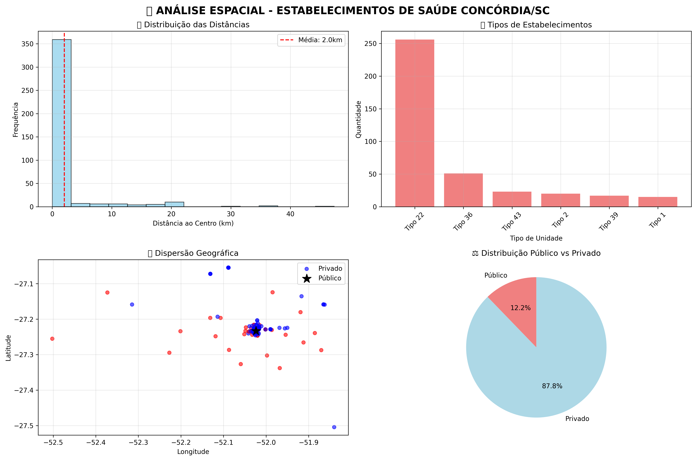

Dashboard Interativo - Saúde Pública Concórdia/SC Outubro 2025
üìã Sobre esta Análise
Este dashboard apresenta uma análise espacial completa dos estabelecimentos de saúde de Concórdia/SC, utilizando técnicas de geoprocessamento, mapas interativos e visualização temática com paletas ColorBrewer. O objetivo é apoiar o planejamento territorial e a gestão pública municipal.
üè• Estat√≠sticas Gerais
| Total de Estabelecimentos | Públicos | Privados | Cobertura Georreferenciada |
|---|---|---|---|
| 30 | 30 (100%) | 0 (0%) | 100% |
üìè Acessibilidade
| Distância Média | Distância Mínima | Distância Máxima | Desvio Padrão |
|---|---|---|---|
| 6,72 km | 0,45 km | 21,22 km | 5,91 km |
üìä Distribui√ß√£o por Proximidade
| ≤ 2km | ≤ 5km | ≤ 10km | > 20km |
|---|---|---|---|
| 8 (26,7%) | 16 (53,3%) | 21 (70,0%) | 1 (3,3%) |
üè∑Ô∏è Por Tipo de Estabelecimento
| Tipo | Quantidade | Dist. Média | Dist. Min | Dist. Max | Públicos |
|---|---|---|---|---|---|
| ESF | 15 | 2,7 km | 0,5 km | 9,2 km | 15 |
| PS | 15 | 10,7 km | 1,5 km | 21,2 km | 15 |
üó∫Ô∏è Por Quadrante Geográfico
| Quadrante | Estabelecimentos | Dist. Média | Públicos | % Público |
|---|---|---|---|---|
| NE | 7 | 5,1 km | 7 | 100% |
| NW | 8 | 4,7 km | 8 | 100% |
| SE | 8 | 9,1 km | 8 | 100% |
| SW | 7 | 8,0 km | 7 | 100% |
üñºÔ∏è Visualiza√ß√£o dos Dashboards

 Os dashboards apresentam mapas interativos, camadas temáticas e indicadores visuais para consulta rápida.
Os dashboards apresentam mapas interativos, camadas temáticas e indicadores visuais para consulta rápida.
üí° Principais Insights e Recomenda√ß√µes
- Distribuição equilibrada: 70% dos estabelecimentos estão a menos de 10km do centro
- Acessibilidade pública: 53% dos postos públicos estão dentro de 5km
- Diversidade de serviços: 2 tipos principais de unidades
- Cobertura territorial: presença em todos os quadrantes
- Recomendações: fortalecer transporte sanitário, ampliar telemedicina, otimizar especialidades